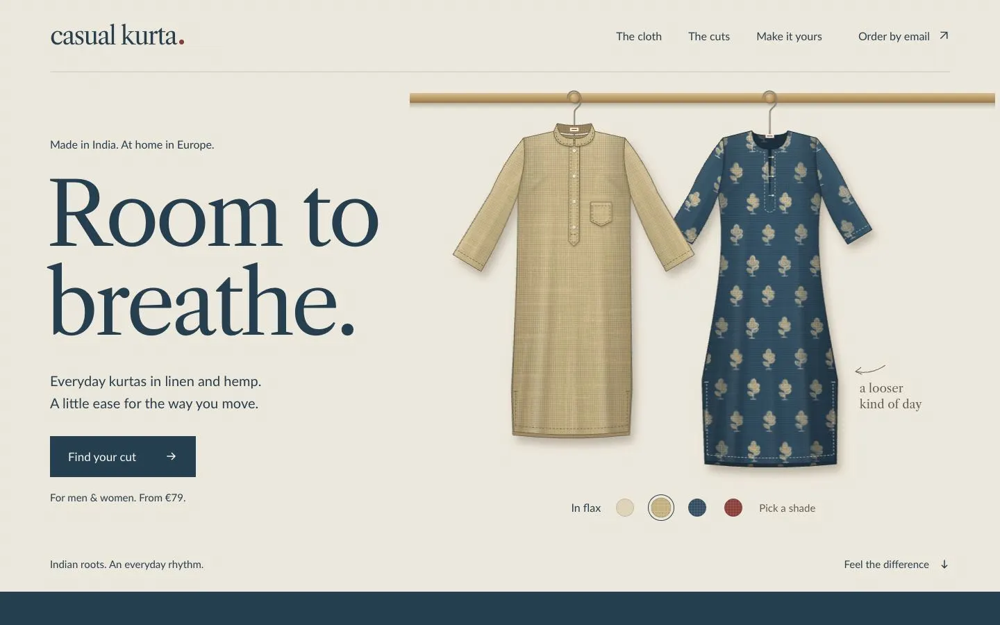
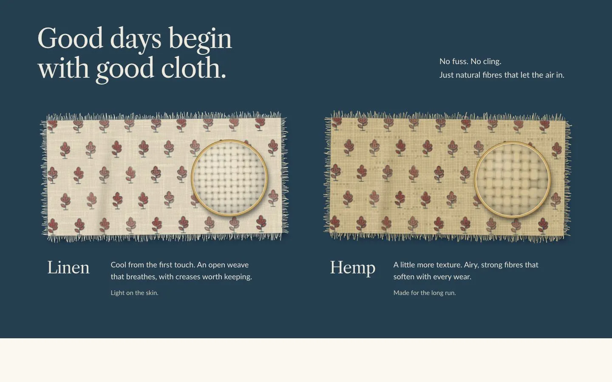

casual kurta
Everyday linen and hemp kurtas, made in India for Europe.
A single-page storefront for a small label selling linen and hemp kurtas for men and women, priced from 79 euros. Orders are placed by email, so the page is built to get a visitor to pick a cut and write in.
Visit casualkurta.com
Design decisions
- The hero pairs a large Libre Caslon Text headline, 'Room to breathe.', in deep navy (#253E50) with body text in Lato on a warm oat background (#EEE9DD).
- The garments are illustrations, not photos: two kurtas hang from a wooden rail with visible stitching, pockets and a woven texture, with a handwritten 'a looser kind of day' note and arrow beside them.
- Four colour swatches under the rail (oat, sand, indigo, red) recolour the hanging kurta and update the label, for example 'In indigo', so the product can be tried without a catalogue.
- The cloth section switches to a full navy band with linen and hemp swatches, each carrying a brass-rimmed magnifier ring that shows the weave up close.
- On mobile the nav drops to two links, the headline keeps its size and the rail of kurtas moves below the call to action, which stays a single full-width-feeling navy button.
On a phone

casual kurta has a single theme, so there is one set of captures.
The flow, step by step



Further down the page
